Selected Work
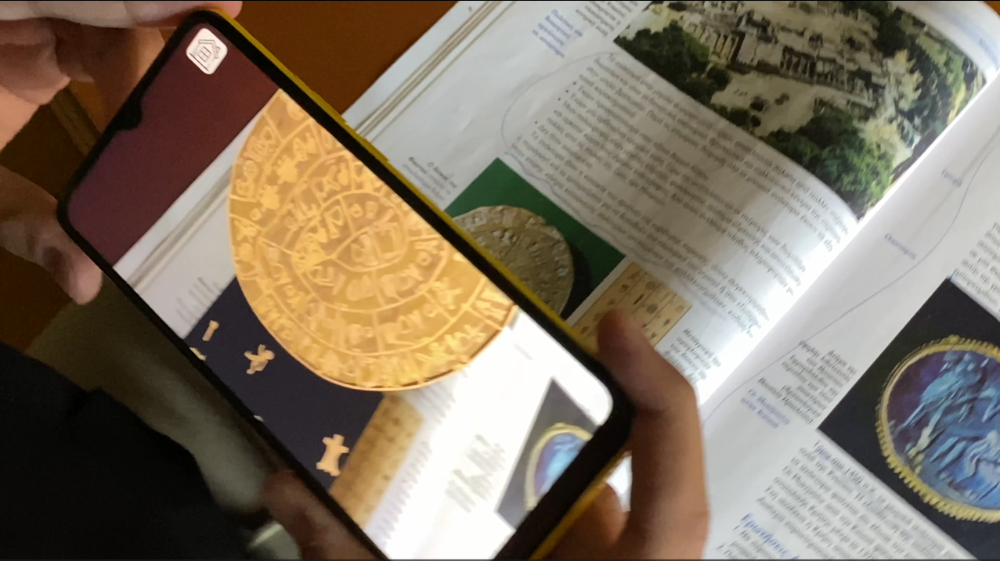
HistoricAR — Master's Thesis
This research project focuses on the development of an advanced educational Augmented Reality (AR) application, designed to bridge the gap between traditional archaeological study and modern digital interaction. Utilizing Unity 3D and the Vuforia Engine, the application provides a high-fidelity, real-time visualization of Minoan artifacts and architectural structures. The thesis explores the implementation of robust C# scripting for complex UI/UX state management, optimization of 3D asset pipelines, and the efficacy of AR as a pedagogical tool for cultural preservation. By integrating interactive spatial narrative frameworks, the project serves as a comprehensive study on how immersive technology can enhance user engagement and facilitate a deeper understanding of historical contexts in modern informatics.
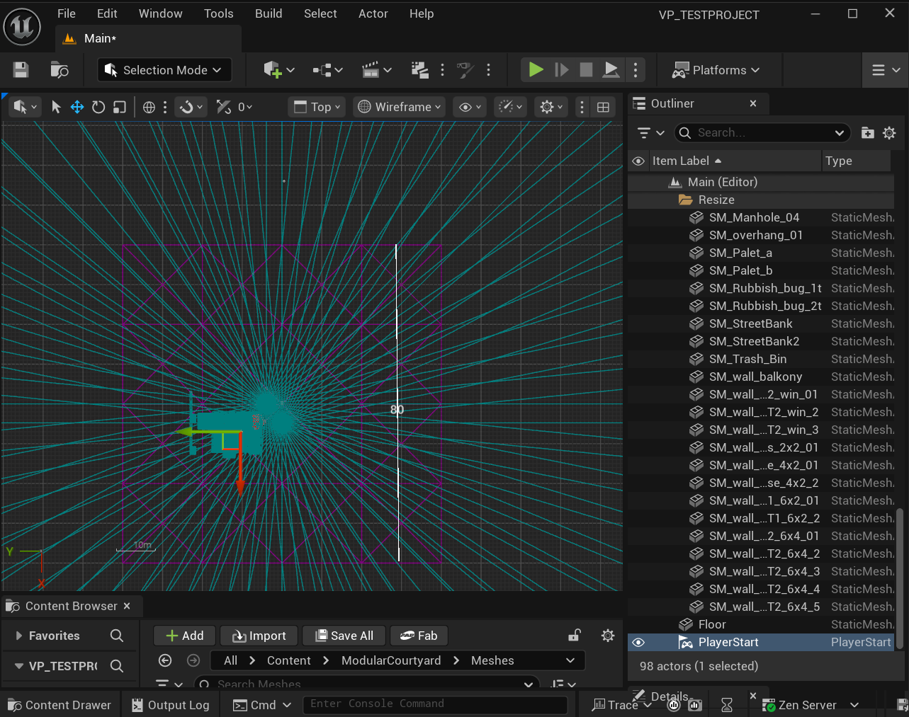
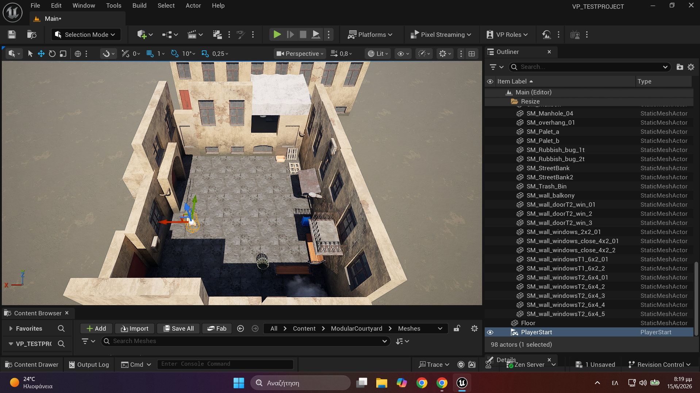
High-Fidelity Virtual Production Environments
Specializing in the design and architectural development of high-fidelity virtual environments for Virtual Production. I leverage Unreal Engine to build immersive, real-time-ready sets that act as seamless digital backdrops for film and broadcast. My process covers the entire environment pipeline: from high-polygon modeling and complex material shading to optimized lighting configurations (Lumen/Nanite) and cinematic spatial integration. I have hands-on experience in managing real-time rendering constraints, ensuring that the environments I create are fully performant and production-ready for in-camera visual effects and live interactive broadcasts.
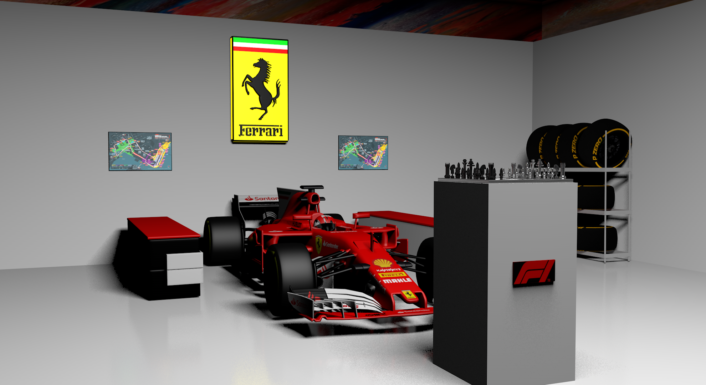
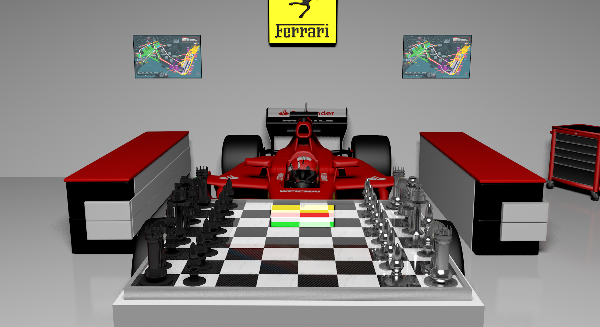
F1 Collector's Chess Set Concept
High-polygon product design reimagining a traditional chess set into a Formula 1 luxury edition using Cinema 4D and Blender.
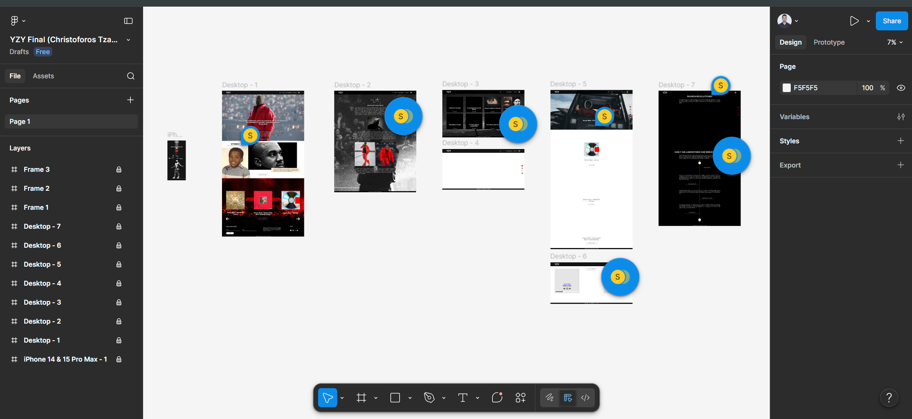
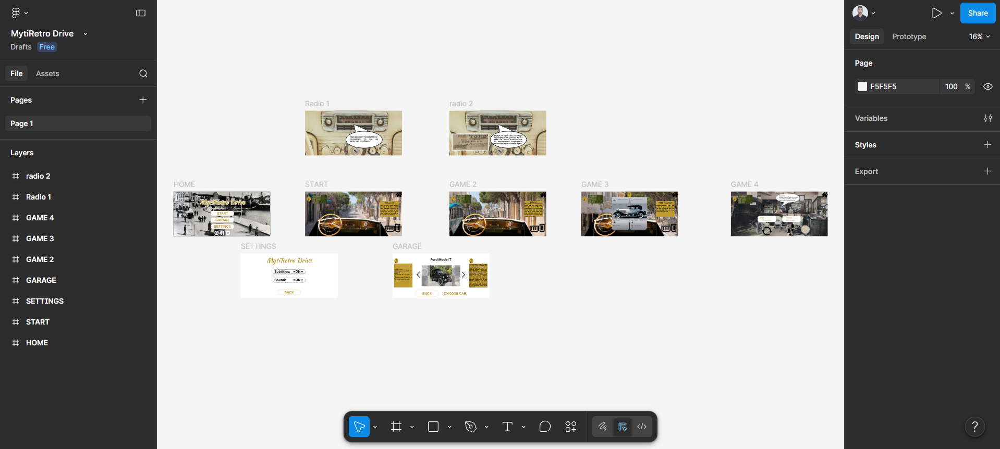

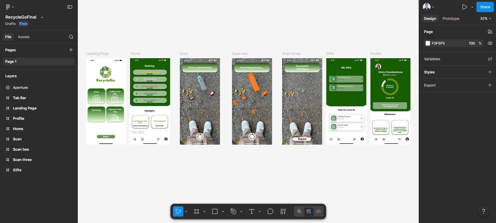
Interface Ecosystem Architecture
A collection of end-to-end UI/UX case studies including YZY platform, MytiRetro Drive, CITIGOAL, and RecycleGo. Featuring interactive prototypes and design systems. All created in Figma platform.
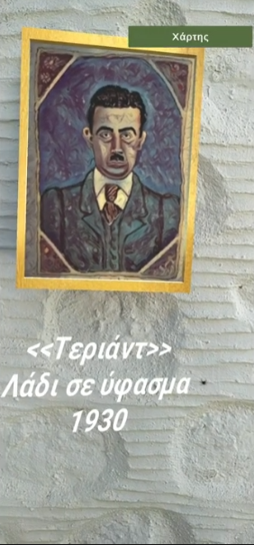
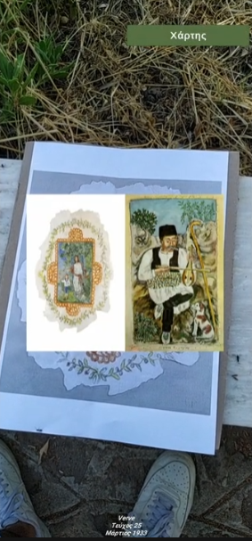
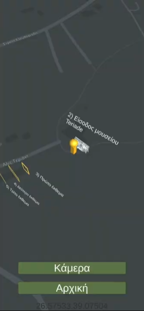
Theorama Experience & Unity Simulations
Interactive spatial multimedia applications engineered to depict historical virtual scenarios, cultural intersections, and backend graph simulations. Developed within the Unity 3D engine, this project links data visualization with immersive storytelling. Features optimized asset pipelines, data-driven UI layouts, and structured interactive frameworks intended to preserve, simulate, and present cultural informatics elements to modern users.


Mysteries and Prophecies: The Interactive Story of Delphi
Design and deployment of a complex interactive narrative application centered on the archaeological site of Delphi. The scenario architecture and branching pathways (nonlinear narrative trees) were fully mapped and engineered utilizing Twine. The system effectively manages intricate dialogue nodes, cultural puzzles, and alternative plot progressions, while its logic is integrated with backend HTML object-oriented architectures within Unity for real-time state management and data persistence via PlayerPrefs.